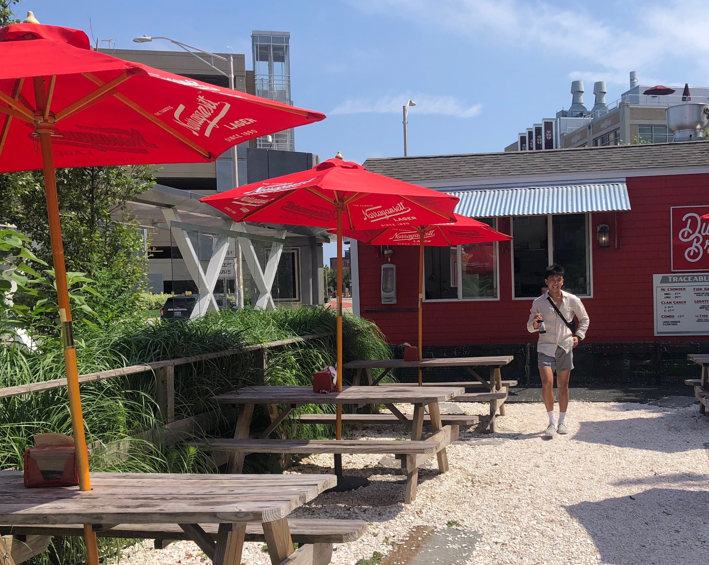

about
Raymond is a junior at Brown University pursuing a Sc.B. in Computer Science and Economics. He is constantly seeking ways to apply data-driven technologies to analyze social issues.
Raymond also holds interests in the burgeoning fields of artificial intelligence and cybersecurity.
In his free time, Raymond enjoys supporting his hometown Dodgers and Lakers, reading, fitness, relaxing outdoors, taking and editing videos, and trying to satisfy his never-ending foodie needs.

Raymond conducts research as a research assistant with Professor David Weil and Brown's Department of Economics.
He is a member of theSocial Innovation Fellowship, a program aimed at developing transformative ventures.
Raymond is the Director of Operations at AsianFeed, a new age media platform championing Asian American culture.
Raymond is looking for internship opportunities for Summer 2022, and can be reached through the links below.